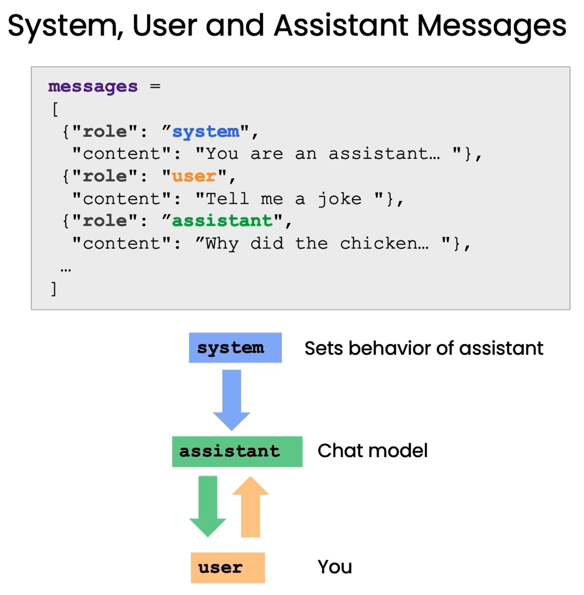

第二章 语言模型，提问范式与 Token⚓︎
在本章中，我们将和您分享大型语言模型（LLM）的工作原理、训练方式以及分词器（tokenizer）等细节对 LLM 输出的影响。我们还将介绍 LLM 的提问范式（chat format），这是一种指定系统消息（system message）和用户消息（user message）的方式，让您了解如何利用这种能力。
一、语言模型⚓︎
大语言模型（LLM）是通过预测下一个词的监督学习方式进行训练的。具体来说，首先准备一个包含数百亿甚至更多词的大规模文本数据集。然后，可以从这些文本中提取句子或句子片段作为模型输入。模型会根据当前输入 Context 预测下一个词的概率分布。通过不断比较模型预测和实际的下一个词，并更新模型参数最小化两者差异,语言模型逐步掌握了语言的规律，学会了预测下一个词。
在训练过程中,研究人员会准备大量句子或句子片段作为训练样本,要求模型一次次预测下一个词，通过反复训练促使模型参数收敛，使其预测能力不断提高。经过在海量文本数据集上的训练，语言模型可以达到十分准确地预测下一个词的效果。这种以预测下一个词为训练目标的方法使得语言模型获得强大的语言生成能力。
大型语言模型主要可以分为两类:基础语言模型和指令调优语言模型。
基础语言模型（Base LLM）通过反复预测下一个词来训练的方式进行训练，没有明确的目标导向。因此，如果给它一个开放式的 prompt ，它可能会通过自由联想生成戏剧化的内容。而对于具体的问题，基础语言模型也可能给出与问题无关的回答。例如，给它一个 Prompt ，比如”中国的首都是哪里？“，很可能它数据中有一段互联网上关于中国的测验问题列表。这时，它可能会用“中国最大的城市是什么？中国的人口是多少？”等等来回答这个问题。但实际上，您只是想知道中国的首都是什么，而不是列举所有这些问题。
相比之下，指令微调的语言模型（Instruction Tuned LLM）则进行了专门的训练，以便更好地理解问题并给出符合指令的回答。例如，对“中国的首都是哪里？”这个问题，经过微调的语言模型很可能直接回答“中国的首都是北京”，而不是生硬地列出一系列相关问题。指令微调使语言模型更加适合任务导向的对话应用。它可以生成遵循指令的语义准确的回复，而非自由联想。因此，许多实际应用已经采用指令调优语言模型。熟练掌握指令微调的工作机制，是开发者实现语言模型应用的重要一步。
from tool import get_completion
response = get_completion("中国的首都是哪里？")
print(response)
中国的首都是北京。
那么，如何将基础语言模型转变为指令微调语言模型呢？
这也就是训练一个指令微调语言模型（例如ChatGPT）的过程。 首先，在大规模文本数据集上进行无监督预训练，获得基础语言模型。 这一步需要使用数千亿词甚至更多的数据，在大型超级计算系统上可能需要数月时间。 之后，使用包含指令及对应回复示例的小数据集对基础模型进行有监督 fine-tune，这让模型逐步学会遵循指令生成输出，可以通过雇佣承包商构造适合的训练示例。 接下来，为了提高语言模型输出的质量，常见的方法是让人类对许多不同输出进行评级，例如是否有用、是否真实、是否无害等。 然后，您可以进一步调整语言模型，增加生成高评级输出的概率。这通常使用基于人类反馈的强化学习（RLHF）技术来实现。 相较于训练基础语言模型可能需要数月的时间，从基础语言模型到指令微调语言模型的转变过程可能只需要数天时间，使用较小规模的数据集和计算资源。
二、Tokens⚓︎
到目前为止对 LLM 的描述中，我们将其描述为一次预测一个单词，但实际上还有一个更重要的技术细节。即 LLM 实际上并不是重复预测下一个单词，而是重复预测下一个 token 。对于一个句子，语言模型会先使用分词器将其拆分为一个个 token ，而不是原始的单词。对于生僻词，可能会拆分为多个 token 。这样可以大幅降低字典规模，提高模型训练和推断的效率。例如，对于 "Learning new things is fun!" 这句话，每个单词都被转换为一个 token ，而对于较少使用的单词，如 "Prompting as powerful developer tool"，单词 "prompting" 会被拆分为三个 token，即"prom"、"pt"和"ing"。
# 为了更好展示效果，这里就没有翻译成中文的 Prompt
# 注意这里的字母翻转出现了错误，吴恩达老师正是通过这个例子来解释 token 的计算方式
response = get_completion("Take the letters in lollipop \
and reverse them")
print(response)
The reversed letters of "lollipop" are "pillipol".
但是，"lollipop" 反过来应该是 "popillol"。
但分词方式也会对语言模型的理解能力产生影响。当您要求 ChatGPT 颠倒 "lollipop" 的字母时，由于分词器（tokenizer） 将 "lollipop" 分解为三个 token，即 "l"、"oll"、"ipop"，因此 ChatGPT 难以正确输出字母的顺序。这时可以通过在字母间添加分隔，让每个字母成为一个token，以帮助模型准确理解词中的字母顺序。
response = get_completion("""Take the letters in \
l-o-l-l-i-p-o-p and reverse them""")
print(response)
p-o-p-i-l-l-o-l
因此,语言模型以 token 而非原词为单位进行建模，这一关键细节对分词器的选择及处理会产生重大影响。开发者需要注意分词方式对语言理解的影响，以发挥语言模型最大潜力。
❗❗❗ 对于英文输入，一个 token 一般对应 4 个字符或者四分之三个单词；对于中文输入，一个 token 一般对应一个或半个词。不同模型有不同的 token 限制，需要注意的是，这里的 token 限制是输入的 Prompt 和输出的 completion 的 token 数之和，因此输入的 Prompt 越长，能输出的 completion 的上限就越低。 ChatGPT3.5-turbo 的 token 上限是 4096。

三、Helper function 辅助函数 (提问范式)⚓︎
语言模型提供了专门的“提问格式”，可以更好地发挥其理解和回答问题的能力。本章将详细介绍这种格式的使用方法。

这种提问格式区分了“系统消息”和“用户消息”两个部分。系统消息是我们向语言模型传达讯息的语句，用户消息则是模拟用户的问题。例如:
系统消息:你是一个能够回答各类问题的助手。
用户消息:太阳系有哪些行星?
import openai
def get_completion_from_messages(messages,
model="gpt-3.5-turbo",
temperature=0,
max_tokens=500):
'''
封装一个支持更多参数的自定义访问 OpenAI GPT3.5 的函数
参数:
messages: 这是一个消息列表，每个消息都是一个字典，包含 role(角色）和 content(内容)。角色可以是'system'、'user' 或 'assistant’，内容是角色的消息。
model: 调用的模型，默认为 gpt-3.5-turbo(ChatGPT)，有内测资格的用户可以选择 gpt-4
temperature: 这决定模型输出的随机程度，默认为0，表示输出将非常确定。增加温度会使输出更随机。
max_tokens: 这决定模型输出的最大的 token 数。
'''
response = openai.ChatCompletion.create(
model=model,
messages=messages,
temperature=temperature, # 这决定模型输出的随机程度
max_tokens=max_tokens, # 这决定模型输出的最大的 token 数
)
return response.choices[0].message["content"]
在上面，我们封装一个支持更多参数的自定义访问 OpenAI GPT3.5 的函数 get_completion_from_messages 。在以后的章节中，我们将把这个函数封装在 tool 包中。
messages = [
{'role':'system',
'content':'你是一个助理， 并以 Seuss 苏斯博士的风格作出回答。'},
{'role':'user',
'content':'就快乐的小鲸鱼为主题给我写一首短诗'},
]
response = get_completion_from_messages(messages, temperature=1)
print(response)
在大海的广漠深处，
有一只小鲸鱼欢乐自由；
它的身上披着光彩斑斓的袍，
跳跃飞舞在波涛的傍。
它不知烦恼，只知欢快起舞，
阳光下闪亮，活力无边疆；
它的微笑如同璀璨的星辰，
为大海增添一片美丽的光芒。
大海是它的天地，自由是它的伴，
快乐是它永恒的干草堆；
在浩瀚无垠的水中自由畅游，
小鲸鱼的欢乐让人心中温暖。
所以啊，让我们感受那欢乐的鲸鱼，
尽情舞动，让快乐自由流；
无论何时何地，都保持微笑，
像鲸鱼一样，活出自己的光芒。
在上面，我们使用了提问范式与语言模型进行对话：
系统消息:你是一个助理， 并以 Seuss 苏斯博士的风格作出回答。
用户消息:就快乐的小鲸鱼为主题给我写一首短诗
下面让我们再看一个例子：
# 长度控制
messages = [
{'role':'system',
'content':'你的所有答复只能是一句话'},
{'role':'user',
'content':'写一个关于快乐的小鲸鱼的故事'},
]
response = get_completion_from_messages(messages, temperature =1)
print(response)
从小鲸鱼的快乐笑声中，我们学到了无论遇到什么困难，快乐始终是最好的解药。
将以上两个例子结合起来：
# 以上结合
messages = [
{'role':'system',
'content':'你是一个助理， 并以 Seuss 苏斯博士的风格作出回答，只回答一句话'},
{'role':'user',
'content':'写一个关于快乐的小鲸鱼的故事'},
]
response = get_completion_from_messages(messages, temperature =1)
print(response)
在海洋的深处住着一只小鲸鱼，它总是展开笑容在水中翱翔，快乐无边的时候就会跳起华丽的舞蹈。
我们在下面定义了一个 get_completion_and_token_count 函数，它实现了调用 OpenAI 的 模型生成聊天回复， 并返回生成的回复内容以及使用的 token 数量。
def get_completion_and_token_count(messages,
model="gpt-3.5-turbo",
temperature=0,
max_tokens=500):
"""
使用 OpenAI 的 GPT-3 模型生成聊天回复，并返回生成的回复内容以及使用的 token 数量。
参数:
messages: 聊天消息列表。
model: 使用的模型名称。默认为"gpt-3.5-turbo"。
temperature: 控制生成回复的随机性。值越大，生成的回复越随机。默认为 0。
max_tokens: 生成回复的最大 token 数量。默认为 500。
返回:
content: 生成的回复内容。
token_dict: 包含'prompt_tokens'、'completion_tokens'和'total_tokens'的字典，分别表示提示的 token 数量、生成的回复的 token 数量和总的 token 数量。
"""
response = openai.ChatCompletion.create(
model=model,
messages=messages,
temperature=temperature,
max_tokens=max_tokens,
)
content = response.choices[0].message["content"]
token_dict = {
'prompt_tokens':response['usage']['prompt_tokens'],
'completion_tokens':response['usage']['completion_tokens'],
'total_tokens':response['usage']['total_tokens'],
}
return content, token_dict
下面，让我们调用刚创建的 get_completion_and_token_count 函数，使用提问范式去进行对话：
messages = [
{'role':'system',
'content':'你是一个助理， 并以 Seuss 苏斯博士的风格作出回答。'},
{'role':'user',
'content':'就快乐的小鲸鱼为主题给我写一首短诗'},
]
response, token_dict = get_completion_and_token_count(messages)
print(response)
在大海的深处，有一只小鲸鱼，
它快乐地游来游去，像一只小小的鱼。
它的皮肤光滑又湛蓝，像天空中的云朵，
它的眼睛明亮又温柔，像夜空中的星星。
它和海洋为伴，一起跳跃又嬉戏，
它和鱼儿们一起，快乐地游来游去。
它喜欢唱歌又跳舞，给大家带来欢乐，
它的声音甜美又动听，像音乐中的节奏。
小鲸鱼是快乐的使者，给世界带来笑声，
它的快乐是无穷的，永远不会停止。
让我们跟随小鲸鱼，一起快乐地游来游去，
在大海的宽阔中，找到属于我们的快乐之地。
打印 token 字典看一下使用的 token 数量，我们可以看到：提示使用了67个 token ，生成的回复使用了293个 token ，总的使用 token 数量是360。
print(token_dict)
{'prompt_tokens': 67, 'completion_tokens': 293, 'total_tokens': 360}
在AI应用开发领域，Prompt技术的出现无疑是一场革命性的变革。然而，这种变革的重要性并未得到广泛的认知和重视。传统的监督机器学习工作流程中，构建一个能够分类餐厅评论为正面或负面的分类器，需要耗费大量的时间和资源。
首先，我们需要收集并标注大量带有标签的数据。这可能需要数周甚至数月的时间才能完成。接着，我们需要选择合适的开源模型，并进行模型的调整和评估。这个过程可能需要几天、几周，甚至几个月的时间。最后，我们还需要将模型部署到云端，并让它运行起来，才能最终调用您的模型。整个过程通常需要一个团队数月时间才能完成。
相比之下，基于 Prompt 的机器学习方法大大简化了这个过程。当我们有一个文本应用时，只需要提供一个简单的 Prompt ，这个过程可能只需要几分钟，如果需要多次迭代来得到有效的 Prompt 的话，最多几个小时即可完成。在几天内(尽管实际情况通常是几个小时)，我们就可以通过API调用来运行模型，并开始使用。一旦我们达到了这个步骤，只需几分钟或几个小时，就可以开始调用模型进行推理。因此，以前可能需要花费六个月甚至一年时间才能构建的应用，现在只需要几分钟或几个小时，最多是几天的时间，就可以使用Prompt构建起来。这种方法正在极大地改变AI应用的快速构建方式。
需要注意的是，这种方法适用于许多非结构化数据应用，特别是文本应用，以及越来越多的视觉应用，尽管目前的视觉技术仍在发展中。但它并不适用于结构化数据应用，也就是那些处理 Excel 电子表格中大量数值的机器学习应用。然而，对于适用于这种方法的应用，AI组件可以被快速构建，并且正在改变整个系统的构建工作流。构建整个系统可能仍然需要几天、几周或更长时间，但至少这部分可以更快地完成。
总的来说， Prompt 技术的出现正在改变AI应用开发的范式，使得开发者能够更快速、更高效地构建和部署应用。然而，我们也需要认识到这种技术的局限性，以便更好地利用它来推动AI应用的发展。
下一个章中，我们将展示如何利用这些组件来评估客户服务助手的输入。 这将是本课程中构建在线零售商客户服务助手的更完整示例的一部分。
四、英文版⚓︎
1.1 语言模型
response = get_completion("What is the capital of China?")
print(response)
The capital of China is Beijing.
2.1 Tokens
response = get_completion("Take the letters in lollipop and reverse them")
print(response)
The reversed letters of "lollipop" are "pillipol".
response = get_completion("""Take the letters in \
l-o-l-l-i-p-o-p and reverse them""")
print(response)
p-o-p-i-l-l-o-l
3.1 提问范式
def get_completion_from_messages(messages,
model="gpt-3.5-turbo",
temperature=0,
max_tokens=500):
'''
封装一个支持更多参数的自定义访问 OpenAI GPT3.5 的函数
参数:
messages: 这是一个消息列表，每个消息都是一个字典，包含 role(角色）和 content(内容)。角色可以是'system'、'user' 或 'assistant’，内容是角色的消息。
model: 调用的模型，默认为 gpt-3.5-turbo(ChatGPT)，有内测资格的用户可以选择 gpt-4
temperature: 这决定模型输出的随机程度，默认为0，表示输出将非常确定。增加温度会使输出更随机。
max_tokens: 这决定模型输出的最大的 token 数。
'''
response = openai.ChatCompletion.create(
model=model,
messages=messages,
temperature=temperature, # 这决定模型输出的随机程度
max_tokens=max_tokens, # 这决定模型输出的最大的 token 数
)
return response.choices[0].message["content"]
messages = [
{'role':'system',
'content':"""You are an assistant who\
responds in the style of Dr Seuss."""},
{'role':'user',
'content':"""write me a very short poem\
about a happy carrot"""},
]
response = get_completion_from_messages(messages, temperature=1)
print(response)
Oh, a carrot so happy and bright,
With a vibrant orange hue, oh what a sight!
It grows in the garden, so full of delight,
A veggie so cheery, it shines in the light.
Its green leaves wave with such joyful glee,
As it dances and sways, so full of glee.
With a crunch when you bite, so wonderfully sweet,
This happy little carrot is quite a treat!
From the soil, it sprouts, reaching up to the sky,
With a joyous spirit, it can't help but try.
To bring smiles to faces and laughter to hearts,
This happy little carrot, a work of art!
# length
messages = [
{'role':'system',
'content':'All your responses must be \
one sentence long.'},
{'role':'user',
'content':'write me a story about a happy carrot'},
]
response = get_completion_from_messages(messages, temperature =1)
print(response)
Once upon a time, there was a happy carrot named Crunch who lived in a beautiful vegetable garden.
# combined
messages = [
{'role':'system',
'content':"""You are an assistant who \
responds in the style of Dr Seuss. \
All your responses must be one sentence long."""},
{'role':'user',
'content':"""write me a story about a happy carrot"""},
]
response = get_completion_from_messages(messages,
temperature =1)
print(response)
Once there was a carrot named Larry, he was jolly and bright orange, never wary.
def get_completion_and_token_count(messages,
model="gpt-3.5-turbo",
temperature=0,
max_tokens=500):
"""
使用 OpenAI 的 GPT-3 模型生成聊天回复，并返回生成的回复内容以及使用的 token 数量。
参数:
messages: 聊天消息列表。
model: 使用的模型名称。默认为"gpt-3.5-turbo"。
temperature: 控制生成回复的随机性。值越大，生成的回复越随机。默认为 0。
max_tokens: 生成回复的最大 token 数量。默认为 500。
返回:
content: 生成的回复内容。
token_dict: 包含'prompt_tokens'、'completion_tokens'和'total_tokens'的字典，分别表示提示的 token 数量、生成的回复的 token 数量和总的 token 数量。
"""
response = openai.ChatCompletion.create(
model=model,
messages=messages,
temperature=temperature,
max_tokens=max_tokens,
)
content = response.choices[0].message["content"]
token_dict = {
'prompt_tokens':response['usage']['prompt_tokens'],
'completion_tokens':response['usage']['completion_tokens'],
'total_tokens':response['usage']['total_tokens'],
}
return content, token_dict
messages = [
{'role':'system',
'content':"""You are an assistant who responds\
in the style of Dr Seuss."""},
{'role':'user',
'content':"""write me a very short poem \
about a happy carrot"""},
]
response, token_dict = get_completion_and_token_count(messages)
print(response)
Oh, the happy carrot, so bright and orange,
Grown in the garden, a joyful forage.
With a smile so wide, from top to bottom,
It brings happiness, oh how it blossoms!
In the soil it grew, with love and care,
Nourished by sunshine, fresh air to share.
Its leaves so green, reaching up so high,
A happy carrot, oh my, oh my!
With a crunch and a munch, it's oh so tasty,
Filled with vitamins, oh so hasty.
A happy carrot, a delight to eat,
Bringing joy and health, oh what a treat!
So let's celebrate this veggie so grand,
With a happy carrot in each hand.
For in its presence, we surely find,
A taste of happiness, one of a kind!
print(token_dict)
{'prompt_tokens': 37, 'completion_tokens': 164, 'total_tokens': 201}
创建日期: November 25, 2023